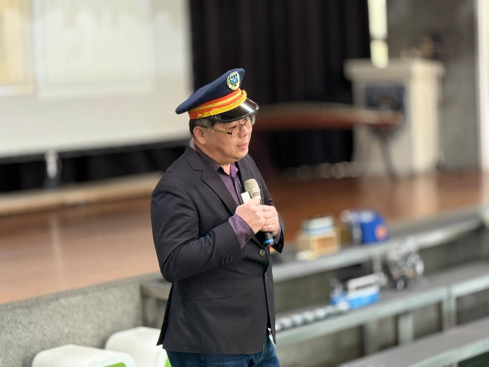
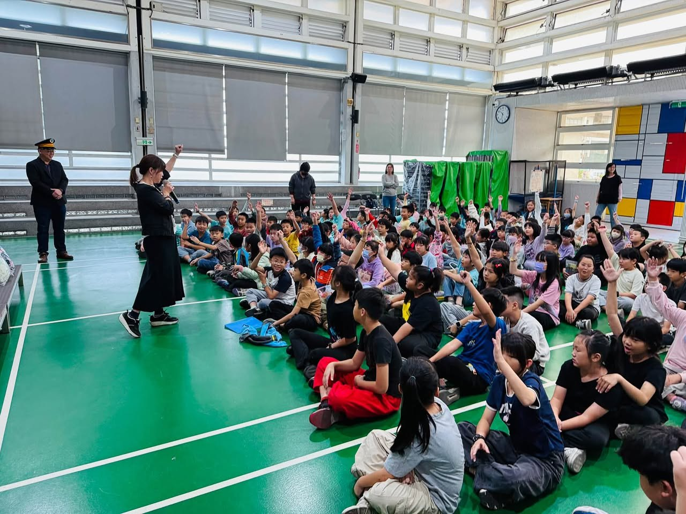
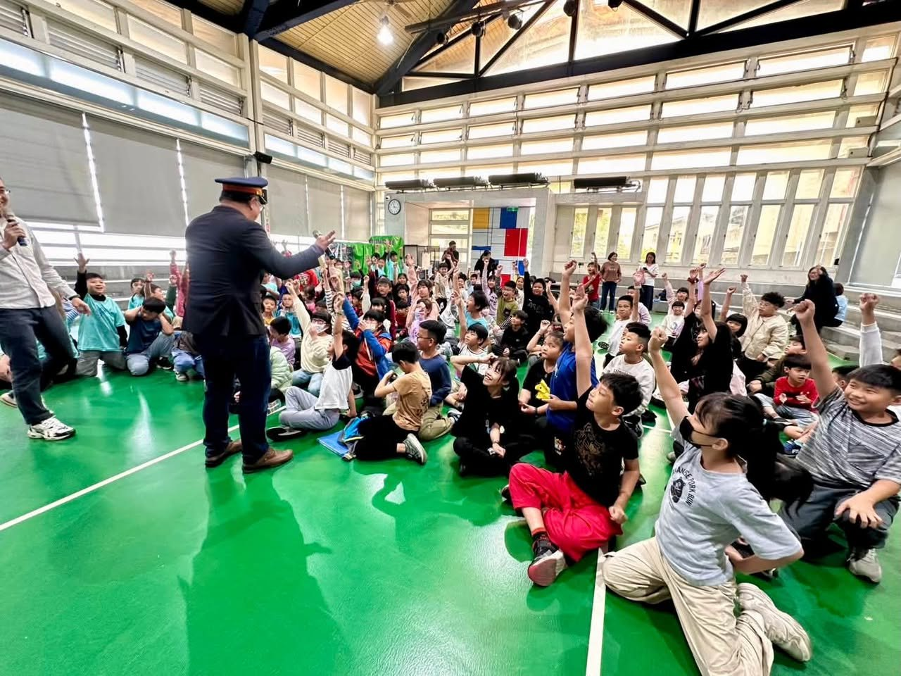
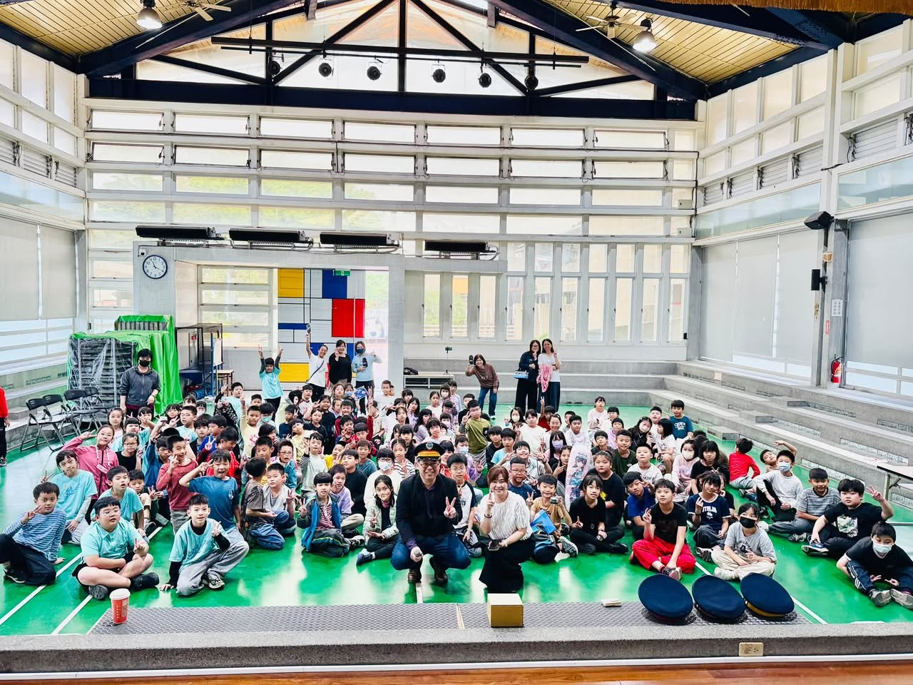

🤔 Would you spend NT$40,000 on an old train so rusty you could hardly tell what it once looked like?
Mr. 陳朝強 of 福井食堂 did — because he hoped that one day, this Sugar Railway Inspection Car No. 135 could run again! 🚃
📖 Today (November 24), during third period, our third and fourth graders gathered in the assembly hall for a Human Library session with Mr. Chen: “The Taste of Rice on the Railway — Lunch Boxes, Rice, and Taiwan’s Stories of Kindness.” (The Human Library is one of the reading programs behind our Setting Sail School recognition.)
- 🔧A long working life — it once patrolled the railway for a sugar factory, and after retiring, spent many years at a nursery school as a plaything for little children巡視鐵路、退休後在托兒所陪小朋友玩
- ♻️A lucky find — Mr. Chen came across it at a recycling yard在資源回收場遇見它
- 🛠️Two years of hard work — he tracked down the original design drawings, and with experienced craftsmen took it apart piece by piece, removed the rust, and put it back together. After more than two years, the old train ran once more on the tracks of the Xihu Sugar Factory! 🚂✨花兩年多修復，回到溪湖糖廠鐵軌上再跑一趟
- 🍱Stories you can hold — he even turned Car No. 135 into ceramic lunch boxes and other creative goods, so railway stories can travel with the smell of rice into everyday life做成陶瓷便當盒等文創小物


「田中往南，下一站是哪裡？」小手一隻接一隻舉起來
🙋 After the story, it was the children’s turn! “Going south from Tianzhong, what’s the next station?” “Which township is the HSR Changhua Station in?” As soon as each question was asked, hands shot up one after another. 👏
It turns out that Tianzhong, the town we pass through every day, has a Taiwan Railway station and a High Speed Rail station — and once even had little trains carrying sugarcane! 🚆🌾

Next time they ride a train past Tianzhong’s rice fields, maybe the children will point out the window and tell their families the story they heard today. 🥰下次搭火車經過田中的稻田，也許孩子就會指著窗外，跟家人說起今天聽到的故事🥰🌱
💐 Thank you, Mr. Chen, for coming to Hsinmin and sharing the trains you’ve loved for so many years. ❤️ Thanks also to the third- and fourth-grade homeroom and subject teachers for being there, and to Director Yi-liang (益樑主任) of the Office of Academic Affairs for writing the program plan and organizing the event.
🚂 新民真人圖書館｜鐵道上的飯香 🍱🌾
花4萬元，買一輛鏽得看不出原貌的老火車，你會買嗎？🤔
福井食堂的陳朝強先生買了。
因為他想讓這輛糖鐵135號巡道車，有一天能再跑一次🚃
📖 今天（11/24）第三節，新民三、四年級的孩子來到集會堂，聽朝強先生分享「鐵道上的飯香—便當、稻米與臺灣的人情故事」
🔧 這輛135號巡道車，以前在糖廠巡視鐵路，退休後還在托兒所陪小朋友玩了好多年。後來，朝強先生在資源回收場遇見了它。他跑去找當年的設計圖，和老師傅把零件一件一件拆下來、除鏽，再裝回去。花了兩年多，終於讓老火車回到溪湖糖廠的鐵軌上，再跑一趟🚂✨
後來，他還把135號的模樣做成了陶瓷便當盒等周邊文創小物，讓鐵道故事伴著飯香，走進大家的生活🍱❤️
🙋♀️🙋♂️ 聽完故事，換孩子們上場
「田中往南，下一站是哪裡？」
「高鐵彰化站在哪一個鄉鎮？」
題目一出，台下的小手一隻接一隻舉起來👏
原來，我們每天經過的田中，有臺鐵、有高鐵，也曾有載甘蔗的小火車🚆🌾
💐 謝謝朝強先生來到新民，把自己喜歡了這麼多年的火車，講給孩子們聽。下次搭火車經過田中的稻田，也許孩子就會指著窗外，跟家人說起今天聽到的故事🥰🌱
❤️感謝三四年級導師科任老師用心陪伴
❤️感謝教務處益樑主任計劃撰寫統籌規劃
#福井食堂 #真人圖書館 #在地文化教育 #鐵道上的飯香 #糖鐵135號巡道車 #優質新民最佳選擇
Tap 🔊 to listen · 點喇叭聽發音
The old train runs on the railway again.老火車再次在鐵道上奔馳。
The old train was covered in rust.老火車全身都是鏽。
Little trains once carried sugarcane.小火車以前載運甘蔗。
It took over two years to repair the train.修好這輛火車花了兩年多。
He made a ceramic lunch box shaped like the train.他做了火車造型的陶瓷便當盒。
Which station is next if we go south?往南走，下一站是哪裡？
Match the word to its meaning
把英文和中文配對
Matched 配對成功：0 / 6